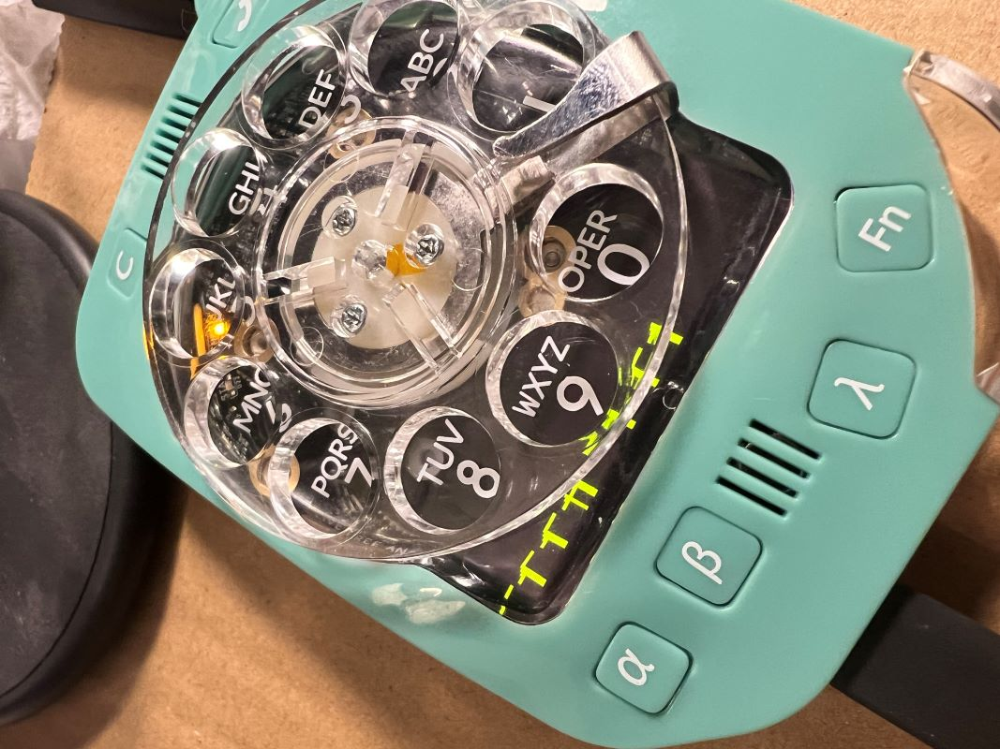
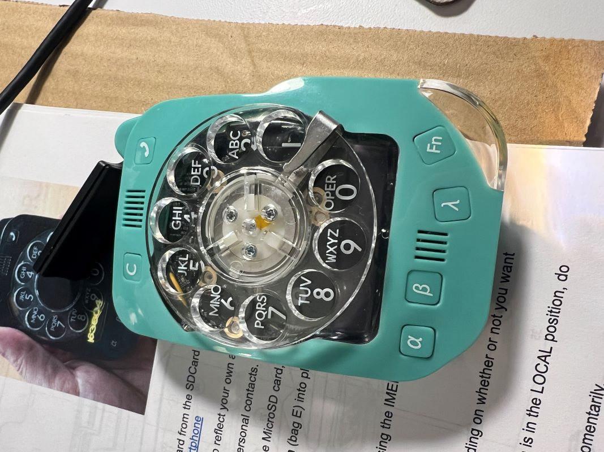
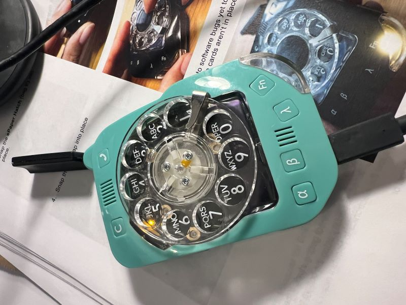

Finished my build. Finally! Build quality came out well.
I got it booted up and lights and display work. However, the numbers dialed do not correspond to the correct number on the display. I'm getting some -1 values too!
One thing I ran into towards the end of the build: It comes with six M2 brass washers, but the instructions specify more. However, I think at least 1-2 of those should use the nylon washer--or should they? I used nylon washers for those last few, and I think they fit better. But maybe that's not right?
Anyway, I need to figure out why the dial is not dialing the correct numbers. I'd love to see if I can make a call! I am using Mint Mobile in the US...not sure if that will work yet but really want to get to a point where I can try.
I did try calling that number from another phone and did not get an incoming call, so I assume it's either not working or something else is wrong.
Justine, should we get the latest firmware from GitHub? or should that already be on the motherboards you sent?
Successful build, but still some things to figure out
Successful build, but still some things to figure out
- Attachments
-
- 
- IMG_7062-sm.jpg (152.7 KiB) Viewed 7504 times
-
- 
- IMG_7061-sm.jpg (151.33 KiB) Viewed 7504 times
-
- 
- IMG_7060-sm.jpg (83.86 KiB) Viewed 7504 times
-
zero1tango
- Posts: 5
- Joined: Sun Jan 07, 2024 4:13 pm
Re: Successful build, but still some things to figure out
Re. wrong numbers appearing during dialing...
You may want to verify that the lobe of the Cam Gear is touching the limit switch's roller ("Rotary Mechanism" step 6) during assembly. The lobe's position is easy to miss and/or slip out of alignment while scrunching the Mother and Daughter Boards together. It might be helpful to put a dot on the top of the Cam Gear lobe's highest point with a Sharpie to make it easier to orient when placing the gear in the Mother Board.
You may want to verify that the lobe of the Cam Gear is touching the limit switch's roller ("Rotary Mechanism" step 6) during assembly. The lobe's position is easy to miss and/or slip out of alignment while scrunching the Mother and Daughter Boards together. It might be helpful to put a dot on the top of the Cam Gear lobe's highest point with a Sharpie to make it easier to orient when placing the gear in the Mother Board.
Re: Successful build, but still some things to figure out
Thank you! I don’t know how many times I had to readjust the gears while I re-attached the boards together. I must have messed this up. Time to take it apart again! 
Re: Successful build, but still some things to figure out
Done with the assembly and repeated reassembly (my fault..).
I also have the issue with the display of 2 whatever dial. Buttons were a bit tricky, I had to cut out and will again have to, for the Fn button. Other than that it went well, considered my experience and finger motor (drummer.. .
.
Greetings from merry Glarus
David
I also have the issue with the display of 2 whatever dial. Buttons were a bit tricky, I had to cut out and will again have to, for the Fn button. Other than that it went well, considered my experience and finger motor (drummer..
Greetings from merry Glarus
David
Re: Successful build, but still some things to figure out
Regarding the numbers dialing wrong, if you want a perspective from the firmware side of things feel free to check out my comments here: viewtopic.php?p=301#p301
In short, apart from mechanical tweaks you can try:
In short, apart from mechanical tweaks you can try:
- flashing our new work-in-progress firmware which has fewer features implemented but is a little more resilient with dialing: https://github.com/skysedge/rusp_firmware
- adjusting various timeouts in the code, and playing with the fudge factor that converts from limit switch pulses to the dialed number (https://github.com/skysedge/rusp_firmwa ... re.ino#L18 in the new code and https://github.com/skysedge/RotaryUnSma ... rs.ino#L52 in the old).